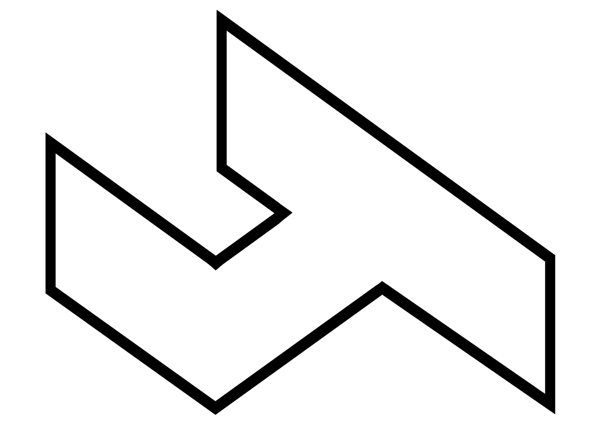
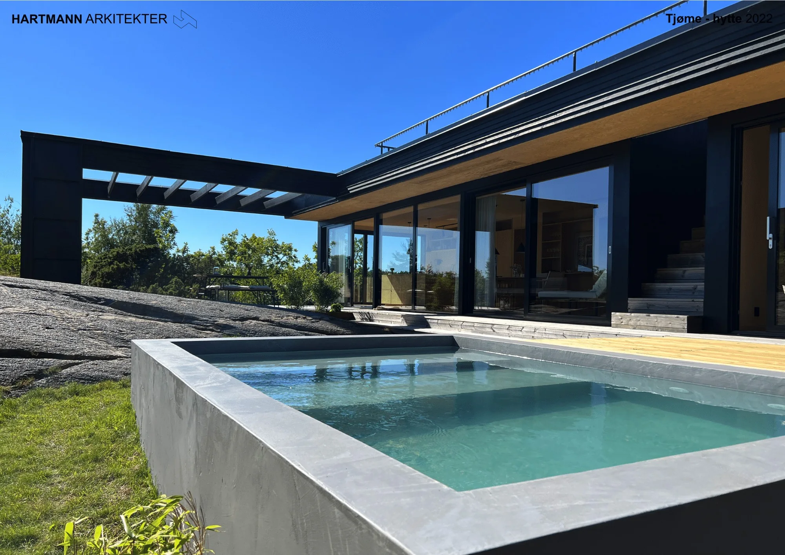
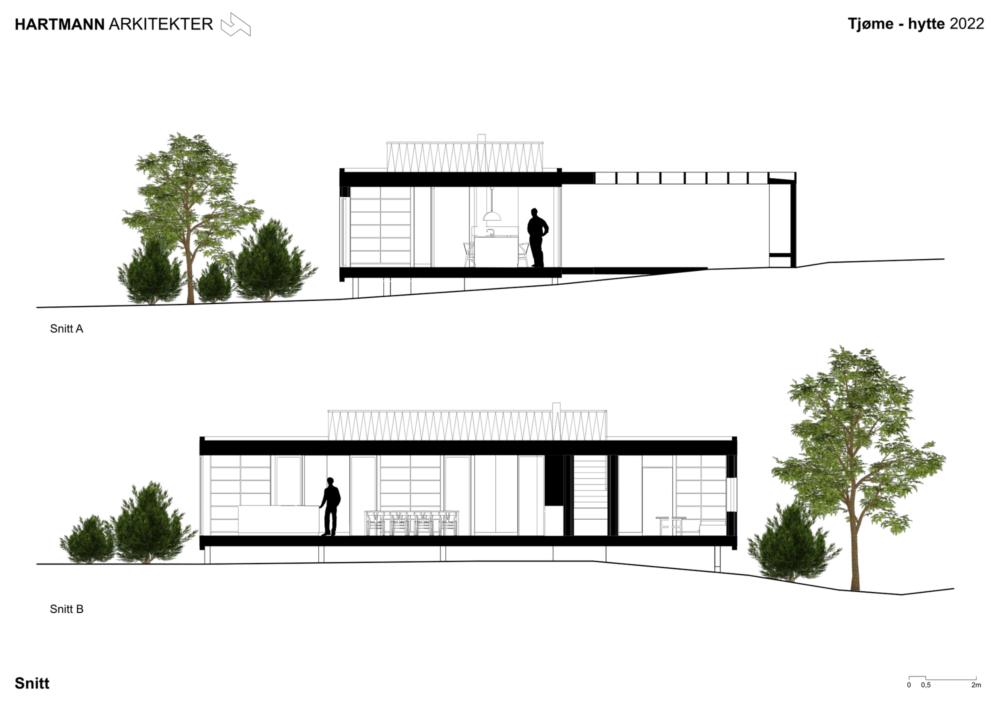

For deg som skal bo.
En bolig begynner med din hverdag. Planløsningen, forholdet til hagen og rommenes fleksibilitet må møte behovene dine.

En oversikt over arbeidet fra idé og skisser til prosjektering. Det konkrete oppdraget avtales ut fra det du skal bygge.
De gode spørsmålene kommer tidlig. Tegningene utvikles i samtalen mellom deg, oss og de andre fagene.
Behov, tomt og muligheter danner utgangspunktet. Hva skal bygges, hvem skal bruke det, og hvilke kvaliteter finnes allerede?
Skisser og romlige modeller gjør ideene konkrete. Planløsning, lys og sammenheng med omgivelsene kan diskuteres tidlig.
Arkitektur, interiør og tekniske fag må henge sammen. Tegninger og modeller er et felles arbeidsgrunnlag.
Byggesøknad og videre detaljering fører arbeidet videre. Oppgaver og leveranser tilpasses omfanget av prosjektet.
På Medø er hytta formet rundt svaberget og livet ute. Store skyvedører åpner kjøkken og oppholdsrom mot terrassen og pergolaen.
Utforsk hytta på Tjøme

Åpne tegningenInne og uteSkyvedørene lar terrassen bli en del av oppholdsrommet.
MaterialerKryssfiner, betong og innebygde møbler gir interiøret sammenheng.
En bolig begynner med din hverdag. Planløsningen, forholdet til hagen og rommenes fleksibilitet må møte behovene dine.
I større prosjekter må tomteutnyttelse, regulering og mange fag sees i sammenheng. Vi arbeider med både småhus, leilighetsbygg og næring.
BIM og 3D-visualisering gjør det lettere å forstå rom, volum og sammenhenger. Modellen hjelper oss å drøfte løsninger sammen.
Arkitekturen utvikles i samspill med de andre fagene. Det gir et bedre grunnlag for å se hvordan valgene påvirker helheten.
Fortell oss om prosjektet dittEt nytt hjem, et bygg som skal fornyes,
eller et område med muligheter?